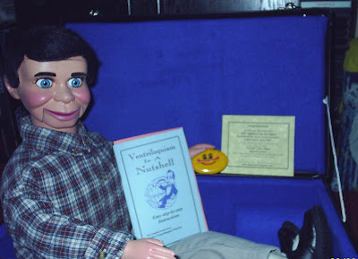

Carrying Case Padding
2/16/2009
Questions: I found a old nice used trunk I 'm going to use for my 40" figure. He needs to have a well padded home! How much foam and what thickness would you recommend? The sizes are 31" x 16" x 9 1/2" deep, plus the top of the trunk which is 4" deep. The trunk has a top tray. Maybe I could use the tray for something like small props, depeding on how much padding you recommed. Thank you! Trenon
* * * * *
Answer: The cases I sell are lined with 1/2" thick foam on all sides and ends. I also use more of the same foam to make a protective head unit. All foam is covered with fleece material. But the cases I sell are custom built for ventriloquist figures. There is very little wasted space anywhere. You, however, have a trunk that is considerably oversize for your vent figure. You need to fold the figure, place it inside the trunk and then decide how much of the extra space you want to try to fill with foam. Foam can be purchased in varying thickness, or several pieces can be glued together for desired thickness. (Wal-Mart sells a couple brands of spray adhesive in their craft department.) On the other hand, you may want to make some sort of partition so the extra space could be used for clothes, props, etc. I think I would try to use the upper tray in that manner. You could glue 1/2" foam to the underside of the tray for the figure's protection when it is packed below the tray. You can see the inside of one of the cases I sell here (and below): Custom Carrying Cases Clinton
* * * * * *
From Mike v. Hecke (right):
Scotty just arrived at my doorstep (Netherlands) less than 30 minutes ago and I must say that he is truly amazing! He just looks so real! And I'm glad that I also ordered a Custom Carrying Case. It's a perfect way to protect Scotty. I cannot thank you enough for everything. It is truly a masterpiece and I can hardly believe that it is really mine ;) Thanks again for everything.
* * * * *
Answer: The cases I sell are lined with 1/2" thick foam on all sides and ends. I also use more of the same foam to make a protective head unit. All foam is covered with fleece material. But the cases I sell are custom built for ventriloquist figures. There is very little wasted space anywhere. You, however, have a trunk that is considerably oversize for your vent figure. You need to fold the figure, place it inside the trunk and then decide how much of the extra space you want to try to fill with foam. Foam can be purchased in varying thickness, or several pieces can be glued together for desired thickness. (Wal-Mart sells a couple brands of spray adhesive in their craft department.) On the other hand, you may want to make some sort of partition so the extra space could be used for clothes, props, etc. I think I would try to use the upper tray in that manner. You could glue 1/2" foam to the underside of the tray for the figure's protection when it is packed below the tray. You can see the inside of one of the cases I sell here (and below): Custom Carrying Cases Clinton
{kind=link}
* * * * * *
From Mike v. Hecke (right):
Scotty just arrived at my doorstep (Netherlands) less than 30 minutes ago and I must say that he is truly amazing! He just looks so real! And I'm glad that I also ordered a Custom Carrying Case. It's a perfect way to protect Scotty. I cannot thank you enough for everything. It is truly a masterpiece and I can hardly believe that it is really mine ;) Thanks again for everything.
